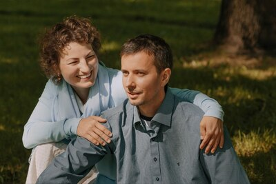

14 лет творческой работы
Центр Альтернативной Психологии (ЦАП) “Седьмой ключ”, расположенный в
г. Санкт-Петербурге, был основан 19 января 2011 года по инициативе профессора Яшара Ибадова.
Имея высшее образование в области фармацевтики и психологии, являюсь руководителем нашего
семейного центра.
Совместно с супругом Владимиром мы посещали семинары автора новой
науки, посвящённых методу психографии, а также выступали с докладами на научных конференциях в
Севастополе и Санкт-Петербурге.
Владимир Викторович, специалист в сфере разработки программного
обеспечения, осуществляет техническую поддержку веб-ресурсов, связанных с деятельностью центра
Альтернативной Психологии (ЦАП).
Его профессиональный вклад включает разработку цифрового варианта
медико-педагого-психологических (МПП) тестов, автором которых является академик Яшар Ибадов.
Данная работа предполагает интеграцию методологических принципов альтернативной психологии с
современными IT-решениями, что позволяет упрощать процедуру тестирования, автоматизировать
обработку результатов. Его деятельность способствует расширению доступности методик АП для
целевой аудитории.
ЦАП “Седьмой ключ” поддерживает профессиональное сотрудничество с
Волгоградским центром альтернативной психологии “Социально-экологический центр здоровья “Яш-Эль”
под руководством Елены Владимировны Росликовой. В рамках этого партнёрства мы осуществляем
делегирование пациентов к более компетентным специалистам в случаях, требующих углублённых
знаний по определённым вопросам. Для укрепления профессиональных связей я посещала Волгоград, а
Елена Владимировна, в свою очередь, приезжала в Санкт-Петербург с целью организации обучающих
программ и работы с пациентами.
Наука Альтернативной Психология продолжает развиваться, предлагая
новые методики и подходы, подобно молодым побегам на дереве. Каждый новый шаг в признании
достижений профессора Ибадова мировым научным сообществом вдохновляет меня на дальнейшее
саморазвитие и реализацию творческого потенциала. Я постоянно совершенствую свои навыки, изучая
новые методы блокировки негативной информации и её трансформации в позитивную с помощью
психокоррекции.
Этот импульс, подобно кругам на воде, распространяется на моё
окружение — родных, близких и пациентов, способствуя их личностному и профессиональному росту.
В своей практике я активно использую символы альтернативной
психологии, такие как «Ключ Жизни», «Символ Жизни», «Зеркало Жизни», а также гармонизаторы,
созданные на их основе. Данные инструменты представляют собой альтернативные средства
фармацевтического воздействия. Метод психографии расширяет мои профессиональные возможности как
психолога и фармацевта, позволяя выявлять глубинные причины проблем, включающих негативные
метаморфозы, и трансформировать их в позитивные процессы.
Постоянно появляются новые гармонизаторы, которые расширяют
возможности для работы с пациентами. В качестве фармацевта я рекомендую пациентам гармонизаторы
для самостоятельного использования с целью закрепления достигнутого положительного эффекта.
Альтернативная психология, являясь отраслью арт-терапии, открыла
для меня новые горизонты в восприятии искусства, включая живопись и рисунок. Я получила новую
радость от творческого процесса создания картин.
Мы помогаем также нашим пациентам в раскрытии новых граней таланта,
используя методы альтернативной психологии, в частности, работа с Фазовым портретом личности.
Анализ индивидуальных случаев пациентов и составление рекомендаций
способствует формированию новых психологических подходов и методик, которые позволяют людям
достичь более высокого качества жизни.
Для меня данная деятельность представляет собой синтез природного
дара и профессиональных навыков, направленных на помощь людям. Работа с пациентами вдохновляет и
мотивирует к постоянному развитию. Зачастую пациенты, приведя в соответствие одну сферу жизни,
начинают применять принципы альтернативной психологии к другим её аспектам. Это способствует
целостному восприятию жизни и стимулирует интерес к дальнейшему личностному росту. Многие
пациенты рекомендуют наш центр своим близким, что способствует расширению круга клиентов.
Благодарим уважаемого академика Яшара Ибадова, создателя новой науки Альтернативной Психологии, и руководителя Волгоградского центра АП “Яш-Эль” Елену Владимировну Росликову за многолетнее партнерство и прекрасные результаты совместной работы.